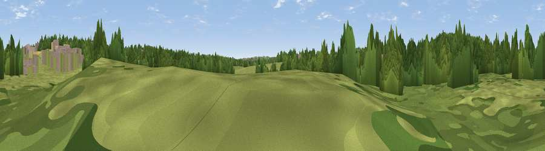

Viewpoint near Shipley View
#45621 in England · top 99% of its area beats it · near Shipley View · footpathWhere it is
The exact computed spot (SK 44592 43640). Click the marker for map links.
Public access: a public right of way passes within 50 m of this spot. Computed from Natural England's CRoW access layer and OpenStreetMap rights of way — not the legal definitive map. Always verify locally.
The view, rendered

A 360° render of this exact spot computed from the terrain model, tree cover and land cover — summer colours, afternoon light, calibrated against photographs of famous viewpoints. Real trees, hedges and buildings will differ in detail.
The panorama
Grey silhouette: terrain skyline in each direction (720 bearings, Earth curvature and refraction included). Dashed green: skyline with trees (+15 m) and buildings (+8 m) as obstacles. Blue strip: how far the ground is visible on each bearing.
Where the view opens
Wedge length = distance to the farthest visible ground on that bearing (vegetation-aware). Rings at 10, 25 and 50 km.
What fills the view
47% woodland · 38% grassland · 10% built-up · 2% water · 2% bare ground ·
Angular shares of the visible panorama (visual magnitude), not map area. Landscape diversity 0.50 (0–1 Shannon).
Key numbers
More beautiful places nearby
The staircase of upgrades: each row has a higher view potential than everything closer. Driving times are estimates from straight-line distance, calibrated against real road routing — check an actual route before setting out.
| Place | Direction | Drive | Score |
|---|---|---|---|
| Viewpoint near Mapperley | WNW · 1 km | ~3 min | 19.7 |
| Viewpoint near Marlpool | N · 2 km | ~6 min | 25.1 |
| Viewpoint near Cossall | ESE · 3 km | ~8 min | 30.7 |
| Viewpoint near Dale Abbey | SSW · 4 km | ~9 min | 37.5 |
| Viewpoint near Brinsley | NNE · 5 km | ~11 min | 49.8 |
| Viewpoint near Kimberley | E · 5 km | ~11 min | 54.2 |
| Viewpoint near Strelley | ESE · 6 km | ~13 min | 62.6 |
| No Man's Lane | S · 6 km | ~14 min | 65.8 |
52.98824, -1.33719 · source: osm viewpoint · position refined by local search. Computed location — check access rights before visiting.